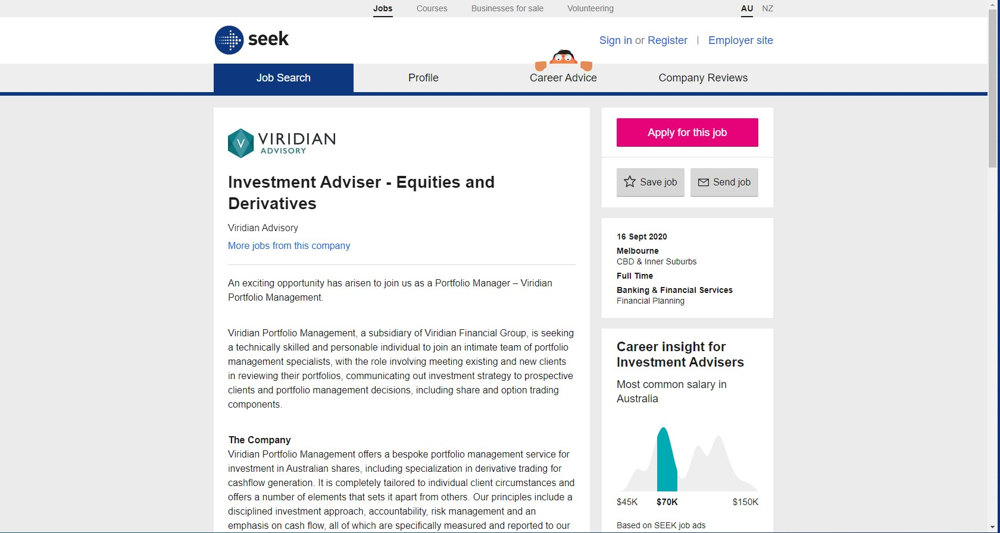
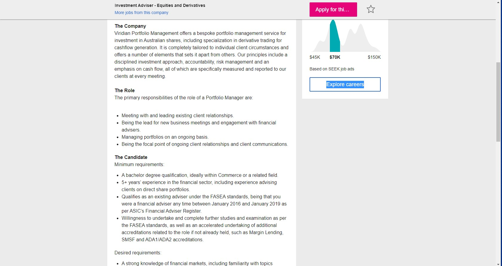
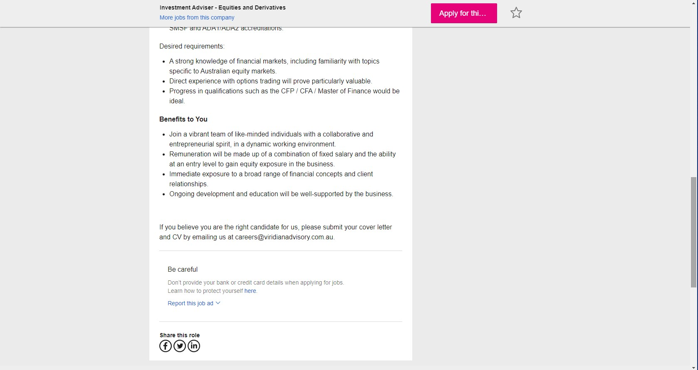

TechBoys
Edward Glush
s3755136
s3755136@student.rmit.edu.au
I’m currently completing a Degree in Financial Planning, with IT as the final subject for me in my University life.
Many of my hobbies lie in sports, both playing and watching. Basketball, football, and many other sports are my joy in the world. Understanding how the world functions and how to help it takes up much of my time, gladly.
31/08/2020
English
Much of my life has been enveloped in sport, particularly as the rest has been purely academic. Other than the aforementioned sporting activities I continuously participate in, I have always enjoyed nature and spending time outside.
Some of the extraordinary activities are fishing and camping, but it is difficult to find the time to put aside for these in particular.
Lastly, I appreciate nature, and the greatly respected David Attenborough. David is quite a vocal point in the natural world, and provides me with inspiration to make the world better.
Our efforts in A2 were great, we discussed all the tasks regularly - thankfully, for the high organisation skills of Smart. We managed to pull together the work of several and complete it together. This really allowed me to see that our work could continue more efficiently, and effectively, in the next assignments.
Smart and I discussed our previous efforts and it has made the quality of our work substantially better, along with our overall communication. We have managed to meet for meetings more regularly, as well as enhancing the quality of our work together. Other than this, there isn’t much to work on as a team. Individually, I have ensured that my work efforts have improved for Assignment 3.
SEEK: System Admin/IT Support, from FourQuarters Recruitment located at:
https://www.seek.com.au/job/50492072?type=standard#searchRequestToken=d7fd 0f2c-fa18-4fff-9db2-c62be45854f0



It is a role with Viridian Advisory, and represents the job that I would love to attain. I’d like to develop my skills to understand numbers, no matter the system or market; however, I do understand the necessity of patience by learning and developing an arsenal of experience. This particular position is most appealing to me as it is a stepping stone towards my future, and ultimately seeks a candidate who would love to take on the responsibilities of the role.
In order to be a qualified financial adviser regarding financial markets, RG146 is needed along with a Financial Planning degree. This can be completed by finishing an Undergraduate degree such as Financial Planning at RMIT.
In order to be a qualified Actuary however, a series of examinations split across three parts of study is needed - if you seek to be a Fellow. It is a lengthy process and gradually becomes more difficult towards the latter stage of the approximate 7-10 years needed. Lastly, I believe this position could use knowledge in financial risk, where Actuarial Science seems to be quite accurate.
Currently, I am completing my final subject for a Bachelor of Business (Financial Planning) at RMIT. Aside from this, the Institute of Actuarial Studies has provided access to their qualifications, in turn the career itself.
As my education is predominantly in Actuarial Science, the profession requires examinations relating to various subjects across time. With the completion of each subject, another can be taken to step further into the profession and their hierarchy. The Institute of Actuaries administer the exams and allow students world-wide to have access to them, even throughout COVID-19.
I have completed 5/6 Actuarial exemptions under Part I and I am completing the final subject at the upcoming exam sitting in April 2021. Part II involves various subjects administered through specific universities, and this is where I am heading towards in 2021 as well.
Smart and I have a crossing of paths when we consider our professional futures. It is very interesting to see that Smart is working very hard to ensure he is perfecting his craft in programming, diversifying his skills, and implementing them altogether. Thus far, my profession has not required vast programming skills, but I am continuously aiming to improve the gap in my knowledge. Smart is able to ease-in to any IT job as he has a strong background in IT and can effectively design and implement games already – very impressively.
The common elements I have noticed within the job descriptions include analytics, programming knowledge, and communication. In many cases, our interests within the Data world coincide. It is common to see many industries collaborating to achieve total efficiency and promote growth. This connects directly to our mutual capabilities, which is essentially a technical mind-set.
Smart’s position is particularly focused on Information Technology, and the development and adaptation that can be applied to the world - whether personal or commercial. IT system support is a difficult position to attain as it requires immense accuracy of detail, no errors, and continuous teamwork – all of which Smart possesses easily. IT System Admin differs to the Investment Advisory role, mainly in relationship management.
The future position I’d like to fill requires a deep learning of quantitative analytics, complemented with qualitative aspects. The analysis I would provide is with the knowledge of the client’s personal circumstances at all times, and is annotated for the client verbally and virtually; however, IT System Admin is more technical and requires more teamwork to achieve common and difficult objectives.
My professional future will be gravitating towards advice, for various financial situations. My career plan will involve a lot of knowledge to be gained, and adapted, to suit the ever-changing financial environment.
I do not believe that I will intersect with Smart in those particular industries too often, but I do believe that we would meet when considering data analytics. Our career plans as such, are quite different.